Predicción del precio y clasificación de autos usados.#
Contexto#
Este es un dataset actualizado cada pocos meses que contiene casi toda la información relevante que Craigslist proporciona sobre las ventas de autos, incluyendo columnas como precio, condición, fabricante, latitud/longitud, y otras 18 categorías.
Objetivo#
Diseñar modelos supervisados de regresión y clasificación binaria utilizando técnicas de regresión lineal regularizada (Ridge, Lasso) y regresión logística, integradas en un flujo completo con Pipeline y búsqueda de hiperparámetros mediante GridSearchCV, con el propósito de:
Estimar el precio de un auto usado a partir de sus características (tarea de regresión).
Clasificar si un vehículo está en alta demanda o baja demanda (tarea de clasificación binaria).
Descripción de las variables.#
id: Un identificador único para cada anuncio en el dataset.url: El enlace (URL) al anuncio original en Craigslist.region: La región general de Craigslist donde se publicó el anuncio (e.g.,sf bay area,maine).region_url: El URL de la página principal de la región de Craigslist.price: El precio de venta del vehículo, en dólares estadounidenses ($). Es la variable objetivo principal.year: El año de fabricación del vehículo.manufacturer: El fabricante o marca del vehículo (e.g.,ford,toyota,bmw).model: El modelo específico del vehículo (e.g.,mustang,camry,x5).condition: La condición en la que se encuentra el vehículo (e.g.,excellent,good,fair,salvage).cylinders: El tipo de configuración de cilindros del motor (e.g.,4 cylinders,6 cylinders,v8).fuel: El tipo de combustible que utiliza el vehículo (e.g.,gas,diesel,electric,hybrid).odometer: El kilometraje que ha recorrido el vehículo (en millas).title_status: El estado legal del título del vehículo (e.g.,clean,salvage,rebuilt,lien).transmission: El tipo de transmisión (e.g.,automatic,manual,other).VIN(Vehicle Identification Number): El número de identificación único del vehículo.drive: La tracción del vehículo (e.g.,4wd(tracción en las 4 ruedas),fwd(tracción delantera),rwd(tracción trasera)).size: La categoría de tamaño del vehículo (e.g.,compact,mid-size,full-size,sub-compact).type: El tipo de carrocería del vehículo (e.g.,sedan,SUV,truck,coupe,wagon).paint_color: El color del vehículo.image_url: El enlace (URL) a la imagen principal del anuncio.description: El texto de descripción proporcionado por el vendedor en el anuncio.county: El condado (dentro de la región) (Está vacía), el mismo dataset dice que es un error.state: El estado de EE. UU. (abreviado, e.g.,ca,ny) donde se publicó el anuncio.lat: La latitud de la ubicación del vehículo.long: La longitud de la ubicación del vehículo.posting_date: La fecha en la que el anuncio fue publicado en Craigslist.
EDA#
Imports y cargar los datos.#
df = pd.read_csv('/kaggle/input/craigslist-carstrucks-data/vehicles.csv')
print(f"El dataset tiene {df.shape[0]} filas y {df.shape[1]} columnas.")
El dataset tiene 426880 filas y 26 columnas.
df.columns
Index(['id', 'url', 'region', 'region_url', 'price', 'year', 'manufacturer',
'model', 'condition', 'cylinders', 'fuel', 'odometer', 'title_status',
'transmission', 'VIN', 'drive', 'size', 'type', 'paint_color',
'image_url', 'description', 'county', 'state', 'lat', 'long',
'posting_date'],
dtype='object')
df
| id | url | region | region_url | price | year | manufacturer | model | condition | cylinders | ... | size | type | paint_color | image_url | description | county | state | lat | long | posting_date | |
|---|---|---|---|---|---|---|---|---|---|---|---|---|---|---|---|---|---|---|---|---|---|
| 0 | 7222695916 | https://prescott.craigslist.org/cto/d/prescott... | prescott | https://prescott.craigslist.org | 6000 | NaN | NaN | NaN | NaN | NaN | ... | NaN | NaN | NaN | NaN | NaN | NaN | az | NaN | NaN | NaN |
| 1 | 7218891961 | https://fayar.craigslist.org/ctd/d/bentonville... | fayetteville | https://fayar.craigslist.org | 11900 | NaN | NaN | NaN | NaN | NaN | ... | NaN | NaN | NaN | NaN | NaN | NaN | ar | NaN | NaN | NaN |
| 2 | 7221797935 | https://keys.craigslist.org/cto/d/summerland-k... | florida keys | https://keys.craigslist.org | 21000 | NaN | NaN | NaN | NaN | NaN | ... | NaN | NaN | NaN | NaN | NaN | NaN | fl | NaN | NaN | NaN |
| 3 | 7222270760 | https://worcester.craigslist.org/cto/d/west-br... | worcester / central MA | https://worcester.craigslist.org | 1500 | NaN | NaN | NaN | NaN | NaN | ... | NaN | NaN | NaN | NaN | NaN | NaN | ma | NaN | NaN | NaN |
| 4 | 7210384030 | https://greensboro.craigslist.org/cto/d/trinit... | greensboro | https://greensboro.craigslist.org | 4900 | NaN | NaN | NaN | NaN | NaN | ... | NaN | NaN | NaN | NaN | NaN | NaN | nc | NaN | NaN | NaN |
| ... | ... | ... | ... | ... | ... | ... | ... | ... | ... | ... | ... | ... | ... | ... | ... | ... | ... | ... | ... | ... | ... |
| 426875 | 7301591192 | https://wyoming.craigslist.org/ctd/d/atlanta-2... | wyoming | https://wyoming.craigslist.org | 23590 | 2019.0 | nissan | maxima s sedan 4d | good | 6 cylinders | ... | NaN | sedan | NaN | https://images.craigslist.org/00o0o_iiraFnHg8q... | Carvana is the safer way to buy a car During t... | NaN | wy | 33.786500 | -84.445400 | 2021-04-04T03:21:31-0600 |
| 426876 | 7301591187 | https://wyoming.craigslist.org/ctd/d/atlanta-2... | wyoming | https://wyoming.craigslist.org | 30590 | 2020.0 | volvo | s60 t5 momentum sedan 4d | good | NaN | ... | NaN | sedan | red | https://images.craigslist.org/00x0x_15sbgnxCIS... | Carvana is the safer way to buy a car During t... | NaN | wy | 33.786500 | -84.445400 | 2021-04-04T03:21:29-0600 |
| 426877 | 7301591147 | https://wyoming.craigslist.org/ctd/d/atlanta-2... | wyoming | https://wyoming.craigslist.org | 34990 | 2020.0 | cadillac | xt4 sport suv 4d | good | NaN | ... | NaN | hatchback | white | https://images.craigslist.org/00L0L_farM7bxnxR... | Carvana is the safer way to buy a car During t... | NaN | wy | 33.779214 | -84.411811 | 2021-04-04T03:21:17-0600 |
| 426878 | 7301591140 | https://wyoming.craigslist.org/ctd/d/atlanta-2... | wyoming | https://wyoming.craigslist.org | 28990 | 2018.0 | lexus | es 350 sedan 4d | good | 6 cylinders | ... | NaN | sedan | silver | https://images.craigslist.org/00z0z_bKnIVGLkDT... | Carvana is the safer way to buy a car During t... | NaN | wy | 33.786500 | -84.445400 | 2021-04-04T03:21:11-0600 |
| 426879 | 7301591129 | https://wyoming.craigslist.org/ctd/d/atlanta-2... | wyoming | https://wyoming.craigslist.org | 30590 | 2019.0 | bmw | 4 series 430i gran coupe | good | NaN | ... | NaN | coupe | NaN | https://images.craigslist.org/00Y0Y_lEUocjyRxa... | Carvana is the safer way to buy a car During t... | NaN | wy | 33.779214 | -84.411811 | 2021-04-04T03:21:07-0600 |
426880 rows × 26 columns
df.info()
<class 'pandas.core.frame.DataFrame'>
RangeIndex: 426880 entries, 0 to 426879
Data columns (total 26 columns):
# Column Non-Null Count Dtype
--- ------ -------------- -----
0 id 426880 non-null int64
1 url 426880 non-null object
2 region 426880 non-null object
3 region_url 426880 non-null object
4 price 426880 non-null int64
5 year 425675 non-null float64
6 manufacturer 409234 non-null object
7 model 421603 non-null object
8 condition 252776 non-null object
9 cylinders 249202 non-null object
10 fuel 423867 non-null object
11 odometer 422480 non-null float64
12 title_status 418638 non-null object
13 transmission 424324 non-null object
14 VIN 265838 non-null object
15 drive 296313 non-null object
16 size 120519 non-null object
17 type 334022 non-null object
18 paint_color 296677 non-null object
19 image_url 426812 non-null object
20 description 426810 non-null object
21 county 0 non-null float64
22 state 426880 non-null object
23 lat 420331 non-null float64
24 long 420331 non-null float64
25 posting_date 426812 non-null object
dtypes: float64(5), int64(2), object(19)
memory usage: 84.7+ MB
# Eliminar columnas irrelevantes o redundantes
cols_to_drop = [
'id', 'url', 'region_url', 'VIN', 'image_url',
'description', 'county', 'lat', 'long', 'posting_date'
]
df_cleaned = df.drop(columns=cols_to_drop)
print(f"Columnas eliminadas: {cols_to_drop}")
Columnas eliminadas: ['id', 'url', 'region_url', 'VIN', 'image_url', 'description', 'county', 'lat', 'long', 'posting_date']
Análsis de NA#
# Manejo de valores faltantes
# Calculamos el porcentaje de valores nulos por columna
missing_percentage = df_cleaned.isnull().sum() / len(df_cleaned) * 100
print("\nPorcentaje de valores faltantes por columna:")
print(missing_percentage.sort_values(ascending=False))
Porcentaje de valores faltantes por columna:
size 71.767476
cylinders 41.622470
condition 40.785232
drive 30.586347
paint_color 30.501078
type 21.752717
manufacturer 4.133714
title_status 1.930753
model 1.236179
odometer 1.030735
fuel 0.705819
transmission 0.598763
year 0.282281
region 0.000000
price 0.000000
state 0.000000
dtype: float64
df_cleaned.isna().sum()
region 0
price 0
year 1205
manufacturer 17646
model 5277
condition 174104
cylinders 177678
fuel 3013
odometer 4400
title_status 8242
transmission 2556
drive 130567
size 306361
type 92858
paint_color 130203
state 0
dtype: int64
# Eliminamos la columna size con más de un 70% de valores faltantes
df_cleaned.drop(columns= ['size'], inplace=True)
print(f"\nDimensiones del dataset: {df_cleaned.shape}")
Dimensiones del dataset: (426880, 15)
# Visualizar mapa de datos faltantes
msno.matrix(df_cleaned)
plt.show()
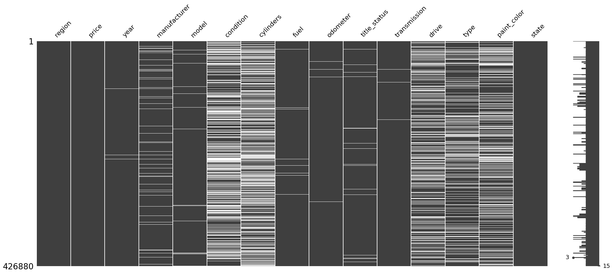
Observamos que en nuestras variables significativas aquellas con mayor cantidad de valores perdidos son Cylinders y Conditions. Mientras que otras como State y Region se encuentran completas
Se procede a eliminar las filas que contienen valores nulos específicamente en las columnas title_status, model, odometer, fuel, year, type,manufacturer,transmission. Esta decisión se basa en que la proporción de datos faltantes en estas columnas es inferior al 5% del total, por lo que su eliminación no afectará significativamente la integridad del conjunto de datos.
# Definimos las columnas en las que buscaremos valores nulos
columns_to_clean = ['title_status', 'model', 'odometer', 'fuel', 'year', 'type', 'manufacturer', 'transmission' ]
# Mostramos las dimensiones del DataFrame antes de la eliminación
print(f"Dimensiones originales: {df_cleaned.shape}")
# Eliminamos las filas que tienen NA *solo en el subconjunto de columnas especificado*
df_cleaned = df_cleaned.dropna(subset=columns_to_clean)
# Mostramos las nuevas dimensiones para verificar el cambio
print(f"Dimensiones después de eliminar NAs en columnas específicas: {df_cleaned.shape}")
Dimensiones originales: (426880, 15)
Dimensiones después de eliminar NAs en columnas específicas: (306976, 15)
Para ‘paint_color’ debemos observar si tiene un impacto en el precio de los carros, de no ser importante (lo que es probable), eliminaremos la columna.
order = df_cleaned.groupby('paint_color')['price'].median().sort_values(ascending=False).index
plt.figure(figsize=(12, 6))
sns.boxplot(
x='paint_color',
y='price',
data=df_cleaned,
order=order,
showfliers=False # Esto oculta los outliers completamente
)
plt.title('Distribución del Precio por Color de Pintura (sin outliers)', fontsize=16)
plt.xlabel('Color de Pintura', fontsize=12)
plt.ylabel('Precio del Vehículo ($)', fontsize=12)
plt.xticks(rotation=45, ha='right')
plt.tight_layout()
plt.show()
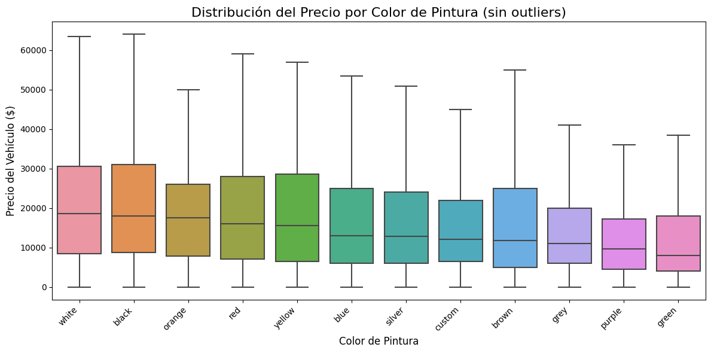
No se observa una diferencia importante asi que se eliminará la columna para reducir el ruido.
df_cleaned = df_cleaned.drop(columns=['paint_color'])
Imputación#
Outliers#
Es hora de decidir sobre los outliers de price y de odometer.
# Verificación completa datos
def check_data_issues(df):
print("=== VERIFICACIÓN DE DATOS ===")
print(f"Valores NaN: {df.isna().sum().sum()}")
# Verificar columnas numéricas específicas
numeric_cols = ['price', 'odometer']
for col in numeric_cols:
if col in df.columns:
print(f"\n--- {col} ---")
print(f"NaN: {df[col].isna().sum()}")
print(f"Mínimo: {df[col].min()}")
print(f"Máximo: {df[col].max()}")
# Ejecutar verificación
check_data_issues(df_cleaned)
=== VERIFICACIÓN DE DATOS ===
Valores NaN: 269749
--- price ---
NaN: 0
Mínimo: 0
Máximo: 3736928711
--- odometer ---
NaN: 0
Mínimo: 0.0
Máximo: 10000000.0
Tanto el precio como el kilometraje tienen valores máximos excesivos, veamos primero la columna de precios.
# Análisis completo de percentiles y estadísticas
print("=== ANÁLISIS DE PRECIOS ===")
print(f"Count: {df_cleaned['price'].count():,}")
print(f"Mean: ${df_cleaned['price'].mean():,.2f}")
print(f"Median: ${df_cleaned['price'].median():,.2f}")
print(f"Std: ${df_cleaned['price'].std():,.2f}")
print(f"Min: ${df_cleaned['price'].min():,.2f}")
print(f"Max: ${df_cleaned['price'].max():,.2f}")
print("\n=== PERCENTILES ===")
percentiles_detallados = [0.01, 0.05, 0.10, 0.25, 0.50, 0.75, 0.90, 0.95, 0.99]
for p in percentiles_detallados:
valor = df_cleaned['price'].quantile(p)
print(f"P{int(p*100)}: ${valor:,.2f}")
=== ANÁLISIS DE PRECIOS ===
Count: 306,976
Mean: $40,445.42
Median: $15,495.00
Std: $7,496,549.27
Min: $0.00
Max: $3,736,928,711.00
=== PERCENTILES ===
P1: $0.00
P5: $0.00
P10: $1,000.00
P25: $6,795.00
P50: $15,495.00
P75: $27,650.00
P90: $37,988.00
P95: $43,900.00
P99: $65,000.00
# Mostrar las filas con precios más altos (top 20)
df_precios_altos = df_cleaned.sort_values('price', ascending=False).head(20)
print("=== TOP 20 PRECIOS MÁS ALTOS ===")
print(df_precios_altos[['price', 'year', 'odometer', 'model', 'condition']])
# Mostrar las filas con precios más bajos (top 20)
df_precios_altos = df_cleaned.sort_values('price', ascending=True).head(20)
print("=== TOP 20 PRECIOS MÁS BAJOS ===")
print(df_precios_altos[['price', 'year', 'odometer', 'model', 'condition']])
=== TOP 20 PRECIOS MÁS ALTOS ===
price year odometer model condition
318592 3736928711 2007.0 164000.0 tundra excellent
184704 1410065407 1989.0 103000.0 wrangler NaN
29386 1111111111 1999.0 149000.0 f350 super duty lariat good
230753 135008900 2008.0 110500.0 titan se kingcab like new
307488 123456789 1996.0 320000.0 sierra 2500 fair
193736 123456789 2015.0 64181.0 cruze like new
137807 123456789 1999.0 96000.0 regal like new
136516 17000000 2007.0 170000.0 2500 good
105843 6995495 2014.0 135888.0 journey NaN
68935 2000000 2002.0 164290.0 l-series l200 4dr sedan good
155421 1234567 2006.0 123456.0 wrangler like new
194292 1234567 2010.0 85653.0 mkt ecoboost like new
219241 1111111 1970.0 42000.0 challenger fair
95119 990000 2017.0 4085.0 amg g 63 NaN
45428 349999 2020.0 2800.0 f8 tributo excellent
44387 347999 2020.0 3000.0 f8 tributo excellent
90274 304995 2021.0 22.0 911 NaN
399462 304995 2021.0 22.0 911 NaN
88588 304995 2021.0 22.0 911 NaN
373509 290000 2012.0 24000.0 town & country limited like new
=== TOP 20 PRECIOS MÁS BAJOS ===
price year odometer model condition
274245 0 2014.0 73136.0 santa+fe excellent
274246 0 2014.0 57193.0 countryman excellent
274247 0 2018.0 47633.0 elantra excellent
274248 0 2011.0 115931.0 e-350 excellent
274249 0 2014.0 77371.0 edge excellent
274250 0 2020.0 18809.0 f-250 excellent
274251 0 2018.0 17294.0 explorer excellent
274252 0 2017.0 29579.0 crosstrek excellent
131108 0 2015.0 122427.0 sonic NaN
131150 0 2017.0 70454.0 forester premium NaN
131155 0 2017.0 68084.0 escape se NaN
346113 0 2017.0 74636.0 pickup 1500 NaN
346119 0 2009.0 0.0 express good
346019 0 2014.0 59346.0 transit connect NaN
346020 0 2016.0 46680.0 cls-class NaN
274244 0 2015.0 50987.0 s60 excellent
398568 0 2013.0 122713.0 fj cruiser NaN
231349 0 2013.0 127051.0 a6 NaN
131099 0 2008.0 201168.0 2500 excellent
131100 0 2015.0 100749.0 5 series like new
Los oiutliers de los precios y el kilometraje se manejarán basandose en los percentiles.
# Manejo de outliers en 'price' y 'odometer'
p_low = df_cleaned['price'].quantile(0.05)
p_high = df_cleaned['price'].quantile(0.99)
o_high = df_cleaned['odometer'].quantile(0.99)
df_cleaned = df_cleaned[
(df_cleaned['price'] > p_low) &
(df_cleaned['price'] < p_high) &
(df_cleaned['odometer'] < o_high)
]
print(f"Dimensiones del dataset tras filtrar outliers: {df_cleaned.shape}")
Dimensiones del dataset tras filtrar outliers: (277771, 14)
Seguimos entonces con la imputación para los datos relevantes en nuestro modelo, es decir las variables: cylinders, condition, drive y type.
1. cylinders#
plt.figure(figsize=(13, 6))
plt.title("Distribución antes de imputar")
# Contar manualmente incluyendo NaN
counts = df_cleaned['cylinders'].fillna('Faltante').value_counts()
sns.barplot(x=counts.index.astype(str), y=counts.values)
plt.xlabel("Número de Cilindros")
plt.ylabel("Frecuencia")
plt.xticks(rotation=45)
plt.show()
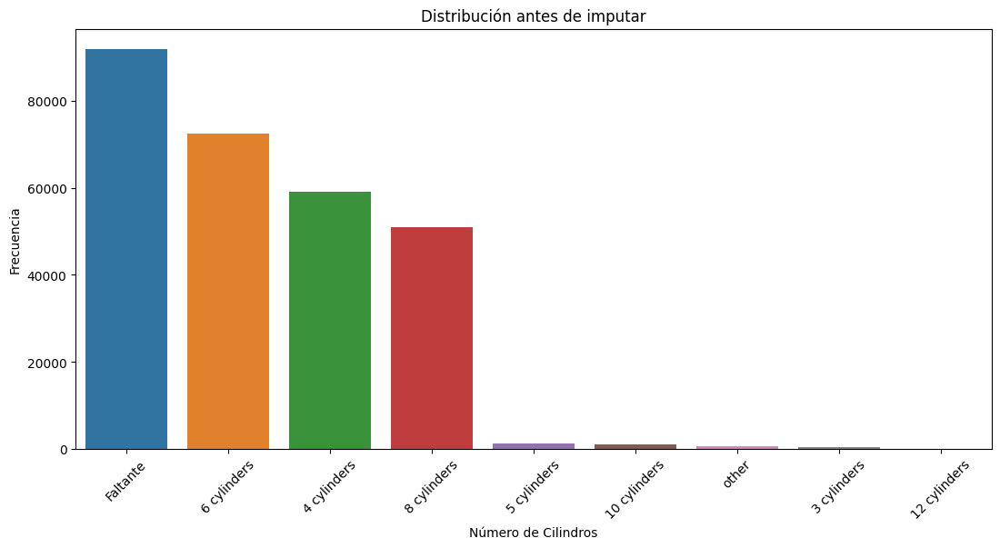
Esta variable tiene una representación de NAs, con un total del 41.622470% sin embargo hemos decidido conservarla pues la consideramos util para el modelo. Por la cantidad grande de valores faltantes, introducir con con un unico valor como lo moda global produciría un sesgo fuerte.
# Función para calcular Cramér's V
def cramers_v(x, y):
confusion_matrix = pd.crosstab(x, y)
chi2 = chi2_contingency(confusion_matrix)[0]
n = confusion_matrix.sum().sum()
phi2 = chi2 / n
r, k = confusion_matrix.shape
return np.sqrt(phi2 / min(k-1, r-1))
# Inicializar diccionario para todas las asociaciones
assoc_results = {}
# --- Variables categóricas ---
cat_cols = df_cleaned.select_dtypes(include=['object', 'category']).columns.tolist()
if 'cylinders' in cat_cols:
cat_cols.remove('cylinders')
for col in cat_cols:
assoc_results[col] = cramers_v(df_cleaned['cylinders'], df_cleaned[col])
# --- Variables numéricas ---
num_cols = df_cleaned.select_dtypes(include=['int64', 'float64']).columns.tolist()
if 'cylinders' in num_cols:
num_cols.remove('cylinders')
for col in num_cols:
assoc_results[col] = abs(df_cleaned[col].corr(pd.to_numeric(df_cleaned['cylinders'], errors='coerce')))
# Convertir a DataFrame y ordenar
assoc_df = pd.DataFrame.from_dict(assoc_results, orient='index', columns=['Correlation'])
assoc_df = assoc_df.sort_values(by='Correlation', ascending=False)
print("Asociación de variables con 'cylinders':")
print(assoc_df)
# Top 10 predictores sugeridos
top_predictors = assoc_df.head(10).index.tolist()
print("\nTop 10 predictores sugeridos para imputar 'cylinders':")
print(top_predictors)
Asociación de variables con 'cylinders':
Correlation
model 0.762634
drive 0.392522
manufacturer 0.343728
type 0.249743
fuel 0.210181
transmission 0.182768
region 0.131778
condition 0.089781
state 0.075290
title_status 0.036240
price NaN
year NaN
odometer NaN
Top 10 predictores sugeridos para imputar 'cylinders':
['model', 'drive', 'manufacturer', 'type', 'fuel', 'transmission', 'region', 'condition', 'state', 'title_status']
Debido a la alta correlación con la variable Model contamos con un caso de MAR. Por lo que hemos decidido realizar una imputación con moda condicional, es decir por cada modelo de auto encontraremos su moda y según ello, le asignaremos la moda condicionada al valor faltante.
# Calcula las modas por grupo
modas_por_grupo = df_cleaned.groupby('model')['cylinders'].agg(
lambda x: x.mode()[0] if not x.mode().empty else np.nan
)
# Mapea las modas al DataFrame
df_cleaned['cylinders'] = df_cleaned['cylinders'].fillna(
df_cleaned['model'].map(modas_por_grupo)
)
# Imputa valores restantes con moda global
moda_global = df_cleaned['cylinders'].mode()[0]
df_cleaned['cylinders'] = df_cleaned['cylinders'].fillna(moda_global)
print("\nValores nulos después:", df_cleaned['cylinders'].isnull().sum())
Valores nulos después: 0
plt.figure(figsize=(13, 6))
plt.title("Distribución después de imputar")
# Contar manualmente incluyendo NaN
counts = df_cleaned['cylinders'].fillna('Faltante').value_counts()
sns.barplot(x=counts.index.astype(str), y=counts.values)
plt.xlabel("Número de Cilindros")
plt.ylabel("Frecuencia")
plt.xticks(rotation=45)
plt.show()
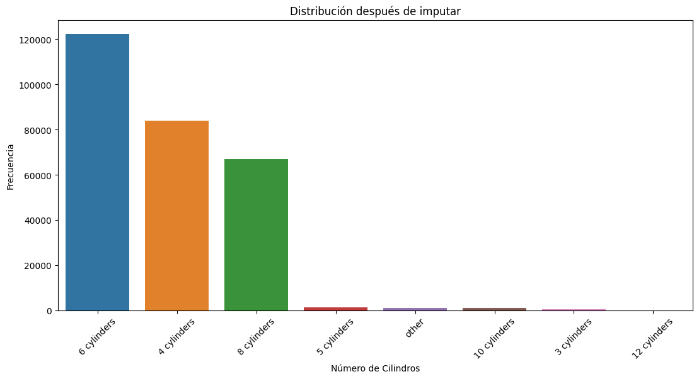
Observamos que la distribución de los datos se mantiene correctamente, por lo que la imputación es válida.
2. condition#
Un valor faltante podría correlacionarse con una condición promedio o mala, pues un vendedor orgulloso de su auto “excelente” casi siempre lo especificará. Al crear una categoría unknown, dejamos que el modelo de Machine Learning aprenda por sí mismo qué significa un condition faltante.
df_cleaned['condition'] = df_cleaned['condition'].fillna('unknown')
plt.figure(figsize=(12, 6))
ax = sns.countplot(data=df_cleaned, x='condition', order=df_cleaned['condition'].value_counts().index)
# Agregar porcentajes en las barras
total = len(df_cleaned)
for p in ax.patches:
percentage = f'{100 * p.get_height() / total:.1f}%'
ax.annotate(percentage,
(p.get_x() + p.get_width() / 2., p.get_height()),
ha='center', va='bottom')
plt.title('Distribución de la Condición de los Autos (con porcentajes)')
plt.xlabel('Condición')
plt.ylabel('Cantidad de Autos')
plt.xticks(rotation=45)
plt.show()
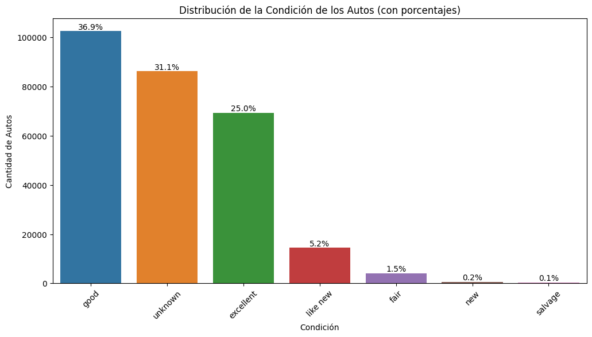
df_cleaned.shape
(277771, 14)
3. drive y type#
# Configurar el estilo de los gráficos
plt.style.use('default')
sns.set_palette("Set2")
# Crear figura con dos subplots en la misma fila
fig, (ax1, ax2) = plt.subplots(1, 2, figsize=(14, 6))
# Gráfico 1: Distribución de 'drive'
drive_counts = df_cleaned['drive'].value_counts()
ax1.pie(drive_counts.values, labels=drive_counts.index, autopct='%1.1f%%', startangle=90)
ax1.set_title('Distribución de Tipos de Tracción (Drive)', fontsize=14, fontweight='bold')
ax1.axis('equal') # Para que el pie chart sea circular
# Gráfico 2: Distribución de 'type'
type_counts = df_cleaned['type'].value_counts()
bars = ax2.bar(type_counts.index, type_counts.values)
ax2.set_title('Distribución de Tipos de Vehículo (Type)', fontsize=14, fontweight='bold')
ax2.set_xlabel('Tipo de Vehículo')
ax2.set_ylabel('Cantidad')
ax2.tick_params(axis='x', rotation=45)
# Añadir valores en las barras
for bar in bars:
height = bar.get_height()
ax2.text(bar.get_x() + bar.get_width()/2., height + 0.5,
f'{int(height)}', ha='center', va='bottom')
plt.tight_layout()
plt.show()
# Mostrar estadísticas adicionales
print("Distribución de Drive:")
print(drive_counts)
print("\nDistribución de Type:")
print(type_counts)
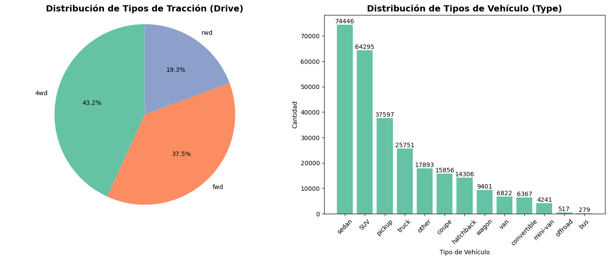
Distribución de Drive:
drive
4wd 95404
fwd 82889
rwd 42713
Name: count, dtype: int64
Distribución de Type:
type
sedan 74446
SUV 64295
pickup 37597
truck 25751
other 17893
coupe 15856
hatchback 14306
wagon 9401
van 6822
convertible 6367
mini-van 4241
offroad 517
bus 279
Name: count, dtype: int64
El tipo de vehículo y la tracción a menudo pueden deducirse del modelo. Por ejemplo, un “Ford F-150” es casi siempre un “truck” (camioneta) y a menudo es “4x4” o “rwd”.
# Crear un mapa de modelos a tipos/tracciones más comunes
# Esto se puede hacer analizando las filas donde los datos NO son nulos
model_to_type = df_cleaned.dropna(subset=['type']).groupby('model')['type'].agg(lambda x: x.mode()[0])
model_to_drive = df_cleaned.dropna(subset=['drive']).groupby('model')['drive'].agg(lambda x: x.mode()[0])
# Aplicar el mapa para rellenar NAs
df_cleaned['type'] = df_cleaned['type'].fillna(df_cleaned['model'].map(model_to_type))
df_cleaned['drive'] = df_cleaned['drive'].fillna(df_cleaned['model'].map(model_to_drive))
print("\nValores nulos de drive después:", df_cleaned['drive'].isnull().sum())
print("\nValores nulos de type después:", df_cleaned['type'].isnull().sum())
Valores nulos de drive después: 13035
Valores nulos de type después: 0
El resto se le hará drop.
df_cleaned = df_cleaned.dropna(subset=['drive'])
Revisando la nueva distribución.
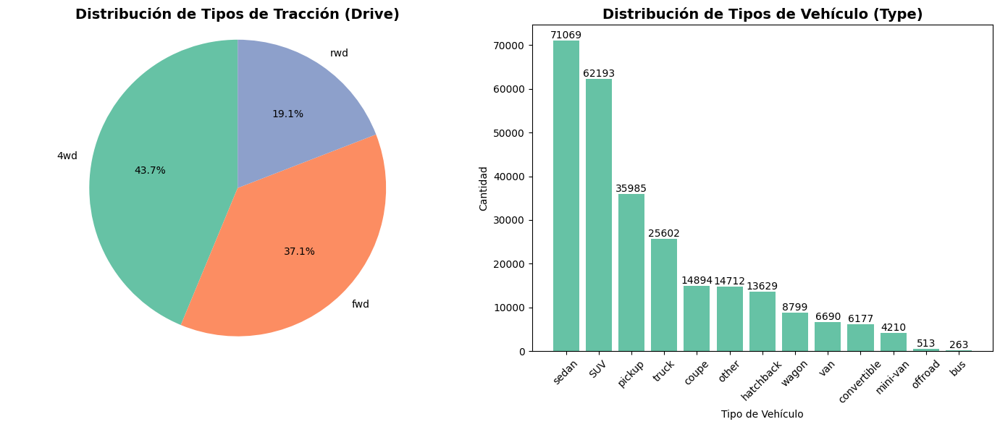
Distribución de Drive:
drive
4wd 115806
fwd 98312
rwd 50618
Name: count, dtype: int64
Distribución de Type:
type
sedan 71069
SUV 62193
pickup 35985
truck 25602
coupe 14894
other 14712
hatchback 13629
wagon 8799
van 6690
convertible 6177
mini-van 4210
offroad 513
bus 263
Name: count, dtype: int64
df_cleaned.shape
(264736, 14)
Análisis Post-Imputación#
fig, axes = plt.subplots(1, 3, figsize=(18, 6))
variables = ['price', 'year', 'odometer']
titles = ['Precio', 'Año de Fabricación', 'Kilometraje']
for i, var in enumerate(variables):
sns.histplot(df_cleaned[var], bins=50, kde=True, ax=axes[i])
# Agregar estadísticas al gráfico
stats_text = f"Media: {df_cleaned[var].mean():.0f}\nMediana: {df_cleaned[var].median():.0f}\nStd: {df_cleaned[var].std():.0f}"
axes[i].text(0.95, 0.95, stats_text, transform=axes[i].transAxes,
verticalalignment='top', horizontalalignment='right',
bbox=dict(boxstyle='round', facecolor='white', alpha=0.8))
axes[i].set_title(f'Distribución de {titles[i]}')
axes[i].set_xlabel(titles[i])
plt.tight_layout()
plt.show()
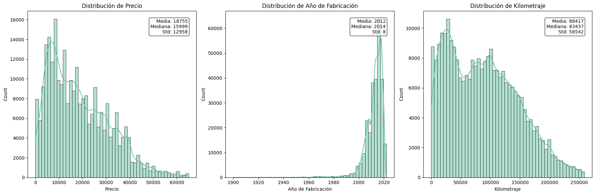
Distribución de Precios: Los precios muestran una fuerte asimetría positiva. La mayoría de los vehículos se concentran en rangos bajos (< 50,000), mientras que algunos vehículos premium crean una cola extensa hacia la derecha. La diferencia entre media (19,441) y mediana (16,496) confirma este sesgo - la mediana representa mejor el precio típico al no verse afectada por los outliers.
Año de Fabricación: Observamos una asimetría negativa, indicando predominio de vehículos modernos. Con una mediana de 2014, el 50% del dataset corresponde a vehículos fabricados después de ese año. Los pocos vehículos antiguos reducen la media (2012), pero representan una fracción mínima del conjunto. La baja desviación estándar (8 años) confirma la concentración.
Kilometraje: Esta variable presenta la distribución más cercana a la normalidad, con ligero sesgo positivo. La concentración principal está entre 50,000-150,000 km, representando el uso típico de vehículos usados. La proximidad entre media (87,727) y mediana (82,459) indica menor influencia de outliers comparado con el precio.
Odometer#
plt.figure(figsize=(10,6))
plt.hexbin(df_cleaned["odometer"], df_cleaned["price"], gridsize=50, cmap="Blues", bins="log")
plt.colorbar(label="Densidad de puntos")
plt.xlabel("Kilometraje (Odometer)")
plt.ylabel("Precio (USD)")
plt.title("Odometer vs Price (densidad)")
plt.show()
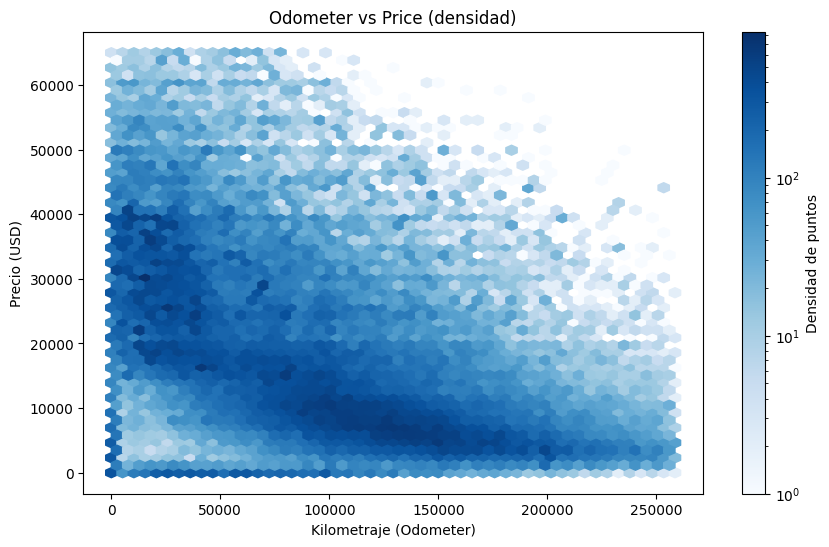
El gráfico demuestra una clara relación inversa entre el kilometraje y el precio de un vehículo: a mayor uso, menor es su valor. La mayor concentración de datos se sitúa en vehículos con 50,000 a 150,000 kilómetros y precios entre 5,000 y 25,000 dólares. En los extremos, los coches con bajo kilometraje tienen una dispersión de precios muy amplia, abarcando desde modelos económicos hasta vehículos de lujo casi nuevos, mientras que aquellos con un alto kilometraje se agrupan consistentemente en los rangos de precios más bajos, confirmando la depreciación por el uso intensivo, de igual manera cabe resaltar la importante variabilidad de manera general de los datos.
Modelos#
top5_counts = df_cleaned['model'].value_counts().nlargest(5)
plt.figure(figsize=(7,7))
plt.pie(top5_counts, labels=top5_counts.index, autopct='%1.1f%%', startangle=140)
plt.title("Distribución de los 5 modelos más usados")
plt.show()
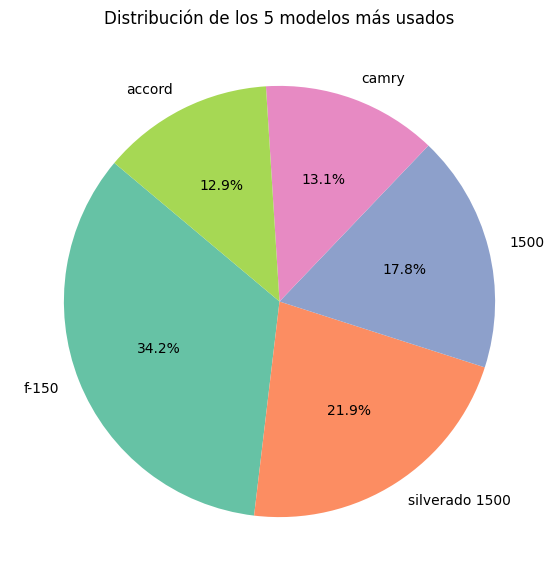
# Obtener los 5 modelos más frecuentes
top5_models = df_cleaned['model'].value_counts().nlargest(5).index
# Filtrar el DataFrame con esos modelos
df_top5 = df_cleaned[df_cleaned['model'].isin(top5_models)]
# Hacer el boxplot (ejemplo con precio, cámbialo por la variable que quieras)
plt.figure(figsize=(10,6))
sns.boxplot(x='model', y='price', data=df_top5)
plt.title("5 modelos más usados")
plt.xlabel("modelos")
plt.xticks(rotation=45)
plt.show()
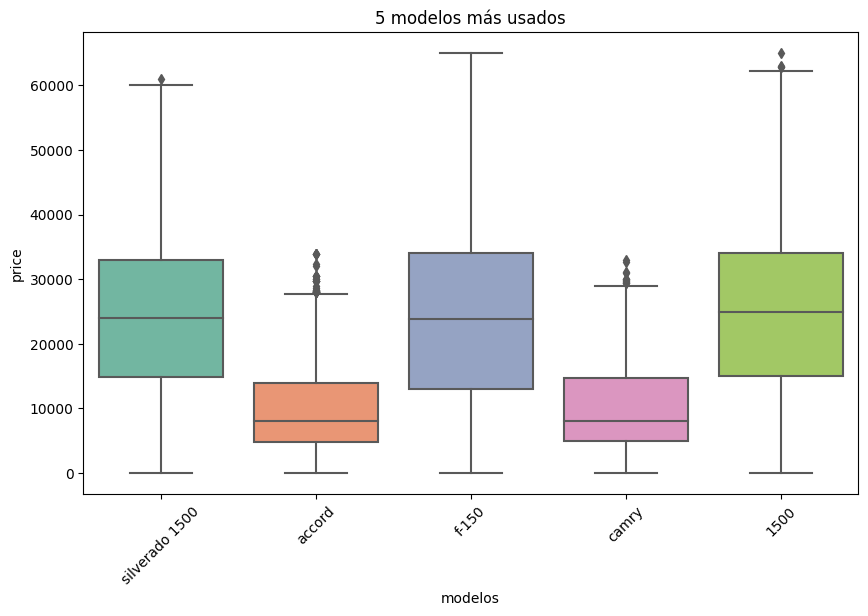
De los 5 modelos más usados sabemos, que el ‘1500’ y el ‘f-150’ son los que la alcanzan consitentemente, los precios más altos sin embargo tienen diferentes ofertas de precio que varían para el 50% de los datos entre 15000 USD y aproxiadamente 32000 USD. Los modelos ‘Camry’ y ‘Accord’ son los más baratos del top 5 más usados, y tienen una variabilidad menor respecto a la oferta del precio, a excepción de ocasiones extrañas donde sus precios alcanzas más e 26000 USD aproximadamente. El modelo ‘f-150’ es el que tiene mayor diferentes ofertas de precios
Año#
plt.figure(figsize=(10,6))
hb = plt.hexbin(df_cleaned['year'], df_cleaned['price'],
gridsize=40, cmap='viridis', mincnt=1)
plt.colorbar(hb, label='Número de autos')
plt.xlabel('Año')
plt.ylabel('Precio')
plt.title('Relación entre Año y Precio (Hexbin)')
plt.show()
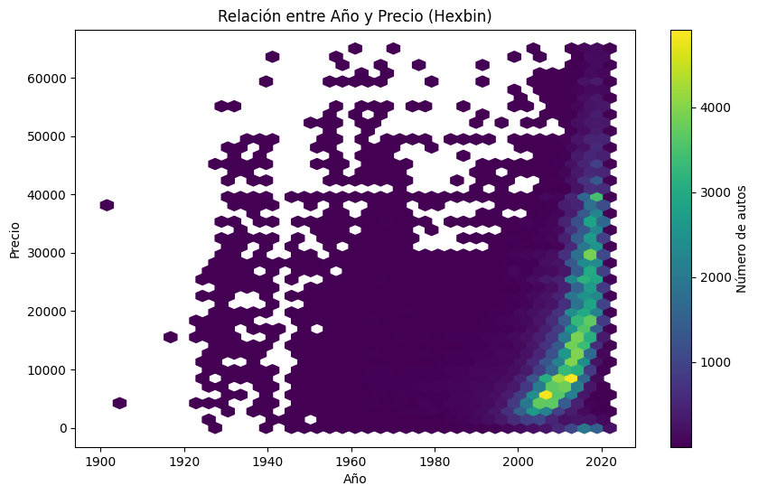
Observamos que los vehiculos el año 2000 hacía atrás los precios y el año no están muy relaciondos pues no tienen una gran variabilidad. Sin embargo su concentración sigue estando más cerca de los precios bajos. A partir del año 2000 hacía adelante empieza a existir, una correlación positiva, entre el el año y el precio. Es decir, mientras el vehículo es más nuevo más caro es. Aunque esto tambien puede ser por sesgo, ya que existen más representación de los autos del año 2000 en adelante que los de antes del 2000
Transmisión#
sns.countplot(x= 'transmission', data = df_cleaned)
plt.xlabel("Transmission")
Text(0.5, 0, 'Transmission')
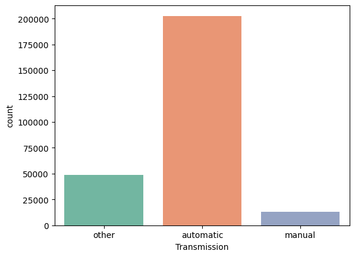
plt.figure(figsize=(10,6))
sns.boxplot(x="transmission", y="price", data=df_cleaned)
plt.xlabel("Transmission")
plt.ylabel("Price")
plt.title("Distribución de precios según tipo de transmisión")
plt.xticks(rotation=45)
plt.show()
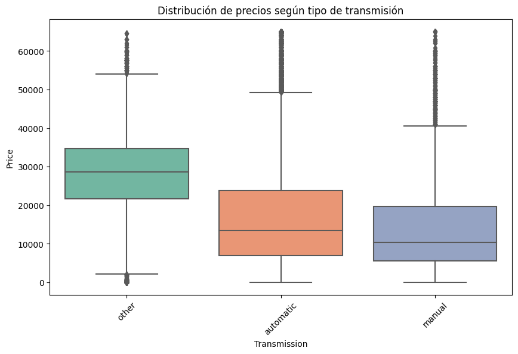
Vemos que los vehículos (aunque con poca representacaión)que tienen un transmisor distinto al manual y al automatico, suelen tener precios mayores. Mientras que los manuales son los más baratos, con el 50% de estos precios entre 5000 usd y 20000 USD aproximadamente y rara vez exceden los 40000 USD. Los automaticos suelen ser un poco más caros que los manuales aunque con mayor variabilidad en le rango de precios y en ocasiones extrañs se encuentran evaluados en más de 47000 USD
Cilindros#
plt.figure(figsize=(13, 6))
sns.countplot(x="cylinders", data = df_cleaned)
<Axes: xlabel='cylinders', ylabel='count'>
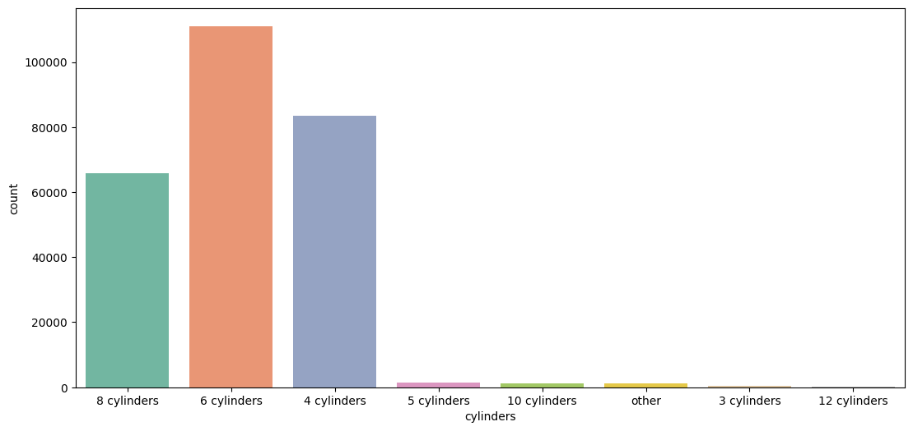
plt.figure(figsize=(10,6))
sns.boxplot(x="cylinders", y="price", data=df_cleaned)
plt.xlabel("Cylinders")
plt.ylabel("Price")
plt.title("Distribución de precios según número de cilindros")
plt.xticks(rotation=45)
plt.show()
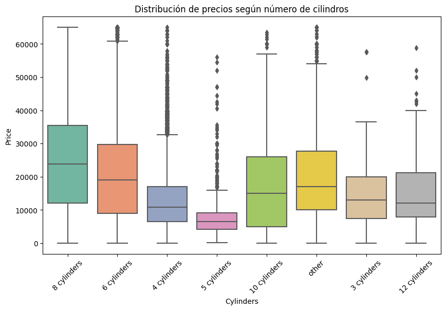
Los autos con un total de 5 cilindros, aunque con poca representación (posible sesgo) son los más baratos. Mientras que los que tienen 8, 4 o 6 cilindros suelen ser más comunes. Siendo el más elevado en precio de estos los que tienen hasta 8 cilindros variando el 50% de la oferta de estos precios entre 10000 USD y 34000 USD aproximadamente. Mientras que el 4 es el más economico, de los 3 más comunes alcanzando un precio maximo de 330000 USD aproximadamente y en raras ocsiones excediente este precio
Fabricantes#
top5_manufacturer = df_cleaned["manufacturer"].value_counts().head(5)
plt.figure(figsize=(8,6))
sns.barplot(x=top5_manufacturer.index, y=top5_manufacturer.values)
plt.xlabel("Manufacturer")
plt.ylabel("Frecuencia")
plt.title("Top 5 fabricantes más frecuentes")
plt.xticks(rotation=45)
plt.show()
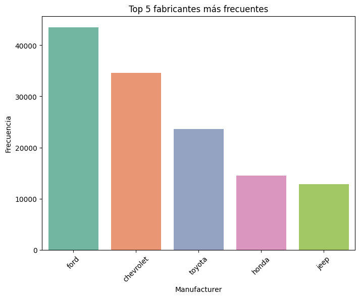
# Filtrar solo fabricantes del top 5
df_top5 = df_cleaned[df_cleaned["manufacturer"].isin(top5_manufacturer.index)]
plt.figure(figsize=(12,6))
sns.boxplot(x="manufacturer", y="price", data=df_top5, order=top5_manufacturer.index)
plt.xlabel("Manufacturer")
plt.ylabel("Price")
plt.title("Distribución de precios según los 5 fabricantes más frecuentes")
plt.xticks(rotation=45)
plt.show()
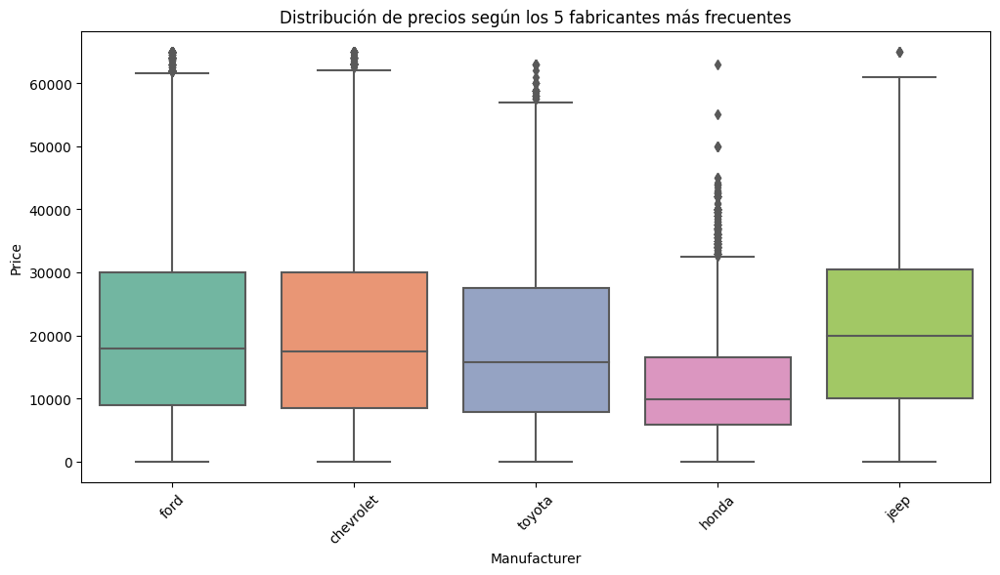
Ford es los fabricantes más comunes en los vehículos de nuestros datos, además los que tienen mayor variabilidad de precio. Por lo que puede explicar que sean los fabricantes con más ventas, teniendo un publico mayor de esta manera. Su rango de precios está concentrado entre 8000 USD y 30000 USD aproximadamente. Los más vehiculos más economicos, aunque con menor representación es honda y a su vez son la fabricora con rangos de precios más bajos, manteniendo un publico más controlado que ford y rara vez excediendo los precios por arriba de 330000 USD.
Ingeniería de características (HighDemand)#
# Tarea 1.5: Generar la variable binaria HighDemand
median_price = df_cleaned['price'].median()
df_cleaned['HighDemand'] = (df_cleaned['price'] > median_price).astype(int)
print(f"Variable 'HighDemand' creada. Mediana del precio: ${median_price:,.2f}")
print("\nDistribución de la nueva variable:")
print(df_cleaned['HighDemand'].value_counts(normalize=True))
Variable 'HighDemand' creada. Mediana del precio: $15,999.00
Distribución de la nueva variable:
HighDemand
0 0.501394
1 0.498606
Name: proportion, dtype: float64
Modelos#
# Importaciones de Scikit-learn para modelado
from sklearn.model_selection import train_test_split, GridSearchCV
from sklearn.pipeline import Pipeline
from sklearn.preprocessing import StandardScaler, OneHotEncoder
from sklearn.compose import ColumnTransformer
# Modelos a utilizar
from sklearn.linear_model import Ridge, Lasso, LogisticRegression
# Métricas de evaluación
from sklearn.metrics import mean_squared_error, r2_score, mean_absolute_error
from sklearn.metrics import classification_report, confusion_matrix, roc_auc_score, RocCurveDisplay
print("Librerías de scikit-learn importadas.")
Librerías de scikit-learn importadas.
Moldelos de Regresión#
df_cleaned.columns
Index(['region', 'price', 'year', 'manufacturer', 'model', 'condition',
'cylinders', 'fuel', 'odometer', 'title_status', 'transmission',
'drive', 'type', 'state', 'HighDemand'],
dtype='object')
df_cleaned.shape
(264736, 15)
Ridge#
Usaremos el solver lsqr ya que One-hot encoder nos deja una matriz sparse por variables como model.
# 1. DEFINIR FEATURES Y TARGET
categorical_features = ['manufacturer', 'model', 'transmission',
'fuel', 'drive', 'type', 'condition', 'title_status', 'cylinders']
numerical_features = ['odometer', 'year']
X = df_cleaned[categorical_features + numerical_features]
y = df_cleaned['price']
# 2. DIVIDIR LOS DATOS EN ENTRENAMIENTO Y PRUEBA
X_train, X_test, y_train, y_test = train_test_split(X, y, test_size=0.2, random_state=12)
# 3. CONFIGURAR EL PIPELINE Y PREPROCESADOR
preprocessor_ridge = ColumnTransformer(
transformers=[
('num', StandardScaler(), numerical_features),
('cat', OneHotEncoder(handle_unknown='ignore'), categorical_features)
]
)
pipeline_ridge = Pipeline(steps=[
('preprocessing', preprocessor_ridge),
('model', Ridge(solver='lsqr'))
])
# 4. CONFIGURAR Y EJECUTAR GRIDSEARCHCV (sobre los datos de entrenamiento)
param_grid_ridge = {
'preprocessing__num': [StandardScaler(), 'passthrough'],
'model__alpha': [0.1, 1, 10, 100]
}
grid_search_ridge = GridSearchCV(
pipeline_ridge,
param_grid_ridge,
cv=5,
scoring='r2',
n_jobs=-1
)
# Entrenamos el grid_search SOLO con los datos de entrenamiento
grid_search_ridge.fit(X_train, y_train)
print("Mejor valor de alpha encontrado:", grid_search_ridge.best_params_)
print("Mejor score R² (en validación cruzada):", grid_search_ridge.best_score_)
print("-" * 40)
Mejor valor de alpha encontrado: {'model__alpha': 0.1, 'preprocessing__num': StandardScaler()}
Mejor score R² (en validación cruzada): 0.7603877385449364
----------------------------------------
Evaluación Ridge#
Métricas de evaluación sobre el conjunto de prueba:
Mean Absolute Error (MAE): 3788.85
Root Mean Squared Error (RMSE): 6379.60
R-squared (R²): 0.7588
----------------------------------------
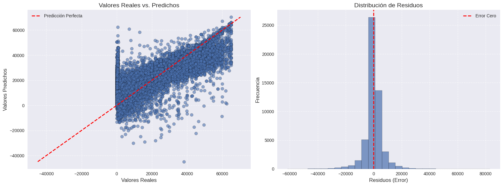
Performance General: El modelo Ridge alcanza un R² = 0.7588, explicando aproximadamente el 76% de la varianza en precios. Esto indica una relación sólida entre las features y el target, pero las métricas de error revelan problemas importantes en la precisión.
Métricas de Error: El MAE (3,788) nos da el error promedio esperado, mientras que el RMSE (6,379) es significativamente mayor. Esta diferencia indica que el modelo comete errores grandes en ciertos casos - el RMSE penaliza más estos outliers, sugiriendo que algunas predicciones están muy desviadas.
Análisis Visual: El plot revela patrones problemáticos:
Heterocedasticidad: La varianza de los residuos aumenta con el precio real, mostrando menor precisión en vehículos caros
Predicciones negativas: Problema fundamental - el modelo genera precios negativos, lo cual no es realista
Subestimación sistemática: Para vehículos >$40k, el modelo tiende a predecir por debajo del valor real
feature_names = (
grid_search_ridge.best_estimator_
.named_steps['preprocessing'] # ColumnTransformer
.get_feature_names_out()
)
coef_ridge = grid_search_ridge.best_estimator_.named_steps['model'].coef_
ridge_df = pd.DataFrame({
'Feature': feature_names,
'Coefficient': coef_ridge
}).sort_values(by='Coefficient', key=abs, ascending=False)
#Grafico
plt.figure(figsize=(10,6))
sns.barplot(data=ridge_df.head(15), x='Coefficient', y='Feature', palette='viridis')
plt.title("Top 15 coeficientes - Ridge Regression")
plt.show()
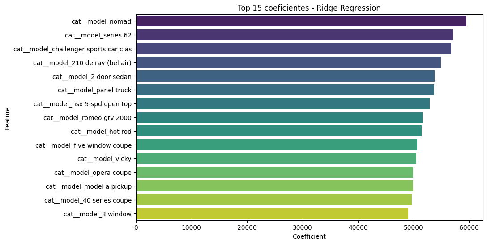
Modelo guardado exitosamente
Lasso#
# 1. DEFINIR FEATURES Y TARGET
categorical_features = ['manufacturer','model', 'transmission', 'cylinders', 'type', 'condition', 'fuel', 'drive', 'title_status']
numerical_features = ['odometer', 'year']
X = df_cleaned[categorical_features + numerical_features]
y = df_cleaned['price'].astype(float)
# 2. DIVIDIR LOS DATOS EN ENTRENAMIENTO Y PRUEBA
X_train, X_test, y_train, y_test = train_test_split(X, y, test_size=0.2, random_state=12)
# 3. PREPROCESAMIENTO: Convertir todo a números
# Este es el paso clave que no puede faltar.
# Creamos las herramientas para transformar las columnas.
preprocessor = ColumnTransformer(
transformers=[
('num', StandardScaler(), numerical_features),
('cat', OneHotEncoder(handle_unknown='ignore'), categorical_features)
],
remainder='passthrough',
n_jobs=-1
)
preprocessor.fit(X_train)
# Ahora, transformamos ambos conjuntos de datos a formato numérico.
X_train_processed = preprocessor.transform(X_train)
X_test_processed = preprocessor.transform(X_test)
# Crear el pipeline
pipeline = Pipeline([
('scaler', StandardScaler(with_mean=False)),
('lasso', Lasso(random_state=12))
])
# Definir los parámetros para GridSearch
param_grid = {
'lasso__alpha': [50, 10, 1],
'lasso__max_iter': [1000],
'lasso__tol': [1e-1]
}
# Configurar GridSearchCV
grid_search = GridSearchCV(
estimator=pipeline,
param_grid=param_grid,
cv=5, # 5-fold cross validation
scoring='r2',
n_jobs=-1, # Usar todos los núcleos de CPU
verbose=1 # Mostrar progreso
)
# Entrenar con GridSearch
print("Iniciando GridSearch...")
grid_search.fit(X_train_processed, y_train)
print("\nGridSearch completado!")
print(f"Mejores parámetros: {grid_search.best_params_}")
print(f"Mejor score (R²) en validación cruzada: {grid_search.best_score_:.4f}")
Iniciando GridSearch...
Fitting 5 folds for each of 3 candidates, totalling 15 fits
GridSearch completado!
Mejores parámetros: {'lasso__alpha': 10, 'lasso__max_iter': 1000, 'lasso__tol': 0.1}
Mejor score (R²) en validación cruzada: 0.7587
Evaluación Lasso#
============================================================
EVALUACIÓN DEL MEJOR MODELO
============================================================
Score en entrenamiento: 0.7939
Score en prueba: 0.7580
Número de features utilizados: 9144
Alpha seleccionado: 10
Métricas en conjunto de prueba:
MSE: 40835762.3245
RMSE: 6390.2866
MAE: 3896.7199
============================================================
RESULTADOS DE TODAS LAS COMBINACIONES
============================================================
params mean_test_score std_test_score rank_test_score
{'lasso__alpha': 10, 'lasso__max_iter': 1000, 'lasso__tol': 0.1} 0.758722 0.002473 1
{'lasso__alpha': 1, 'lasso__max_iter': 1000, 'lasso__tol': 0.1} 0.758168 0.002421 2
{'lasso__alpha': 50, 'lasso__max_iter': 1000, 'lasso__tol': 0.1} 0.726386 0.003310 3
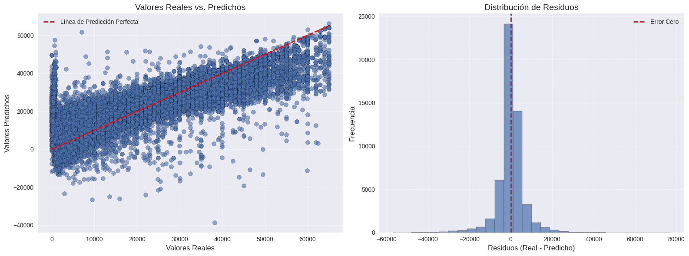
Mejor modelo guardado como 'mejor_modelo_lasso.pkl'
Performance Lasso: El modelo Lasso obtiene un R² = 0.7580, prácticamente similar al Ridge (0.7588). Las métricas de error también son similares: MAE 3,896 vs 3,788, y RMSE 6,390 vs 6,379. Esta similitud indica que ambos enfoques de regularización funcionan igual de bien para este dataset.
Regularización y Overfitting: La brecha entre training (0.7939) y test (0.7580) muestra ligero overfitting, pero controlado.
Selección de Features: Aquí está la diferencia clave con Ridge - Lasso debería hacer feature selection automática, pero mantiene 9144 features activas. Esto se debe probablemente a que por razones de tiempo de ejecución tanto el alpha elegido no fue lo suficientemente alto para forzar sparsity como que la tolerancia fue modificada a 1e-1. En local con diferentes alphas y tolerancia se obtuvo una simplificación de las features, sin embargo, por temas de tiempo y mejorar el score termino así. Mismos Problemas: Los gráficos son muy parecidos a los de Ridge:
Heterocedasticidad persistente: Mayor varianza en precios altos
Predicciones negativas: El problema conceptual se mantiene
Residuos normales: Distribución centrada en cero con colas largas, confirmando outliers
Distribución de Residuos: La forma aproximadamente normal es buena señal, pero las colas largas confirman la presencia de errores grandes que inflan el RMSE.
Moldelo logístico#
# Separar características (X) y el objetivo de clasificación (y)
X = df_cleaned.drop(columns=['price', 'HighDemand'])
y = df_cleaned['HighDemand']
# Identificar columnas numéricas y categóricas
numerical_features = X.select_dtypes(include=np.number).columns.tolist()
categorical_features = X.select_dtypes(exclude=np.number).columns.tolist()
print(f"\nCaracterísticas numéricas ({len(numerical_features)}): {numerical_features}")
print(f"Características categóricas ({len(categorical_features)}): {categorical_features}")
# Dividimos los datos en entrenamiento y prueba. Usamos stratify=y para mantener la proporción de clases.
X_train, X_test, y_train, y_test = train_test_split(
X, y, test_size=0.2, random_state=3, stratify=y
)
print(f"\nDatos divididos: {len(X_train)} para entrenamiento, {len(X_test)} para prueba.")
Características numéricas (2): ['year', 'odometer']
Características categóricas (11): ['region', 'manufacturer', 'model', 'condition', 'cylinders', 'fuel', 'title_status', 'transmission', 'drive', 'type', 'state']
Datos divididos: 211788 para entrenamiento, 52948 para prueba.
# Crear el pipeline de preprocesamiento
preprocessor = ColumnTransformer(
transformers=[
('num', StandardScaler(), numerical_features),
('cat', OneHotEncoder(handle_unknown='ignore'), categorical_features)
],
remainder='passthrough'
)
# Crear el pipeline completo que incluye el preprocesador y el modelo
logreg_pipeline = Pipeline(steps=[
('preprocessor', preprocessor),
('model', LogisticRegression(max_iter=1000, solver='liblinear', random_state=3)) # Añadimos random_state para reproducibilidad
])
print("\nPipeline de Regresión Logística creado.")
# Definir el grid de hiperparámetros para la regularización C
param_grid_logreg = {
'model__C': [0.01, 0.1, 1, 10, 100]
}
# Configurar y ejecutar GridSearchCV para encontrar el mejor hiperparámetro C
grid_search_logreg = GridSearchCV(logreg_pipeline, param_grid_logreg, cv=5,
scoring='roc_auc', n_jobs=-1)
print("Entrenando modelo de Regresión Logística con GridSearchCV...")
grid_search_logreg.fit(X_train, y_train)
# Guardar el mejor modelo encontrado
best_logreg = grid_search_logreg.best_estimator_
print(f"\nEntrenamiento completado.")
print(f"Mejor puntuación ROC AUC en validación cruzada: {grid_search_logreg.best_score_:.4f}")
print(f"Mejores hiperparámetros: {grid_search_logreg.best_params_}")
Pipeline de Regresión Logística creado.
Entrenando modelo de Regresión Logística con GridSearchCV...
Entrenamiento completado.
Mejor puntuación ROC AUC en validación cruzada: 0.9672
Mejores hiperparámetros: {'model__C': 100}
Evaluación Logístico#
--- Evaluación en el Conjunto de Prueba ---
Reporte de Clasificación:
precision recall f1-score support
Baja Demanda 0.92 0.91 0.91 26548
Alta Demanda 0.91 0.91 0.91 26400
accuracy 0.91 52948
macro avg 0.91 0.91 0.91 52948
weighted avg 0.91 0.91 0.91 52948
Área Bajo la Curva ROC (AUC): 0.9683
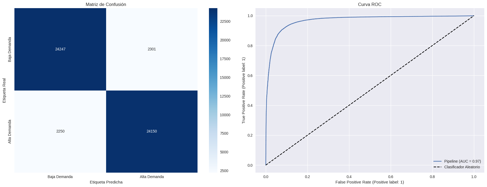
Teniendo en cuenta que la categoría de Demanda fue creada arbitrariamente:
Performance Logístico: El modelo logra un 91% de accuracy con un AUC de 0.97 - métricas que indican performance casi óptima. Con un AUC tan alto, el modelo tiene capacidad discriminatoria excelente: hay 97% de probabilidad de que asigne mayor score a un producto de “Alta Demanda” versus uno de “Baja Demanda”.
Balance Entre Clases: Las métricas están equilibradas: precision, recall y f1-score de ~0.91 para ambas clases. Esto es crucial porque significa que el modelo no tiene sesgo hacia ninguna categoría - predice igual de bien alta y baja demanda. El dataset balanceado (26,548 vs 26,400 muestras) garantiza que esta performance es genuina.
Análisis de Errores: La matriz de confusión muestra errores simétricos: ~2,300 falsos positivos y ~2,250 falsos negativos. Esta simetría confirma la ausencia de sesgo sistemático. El modelo se equivoca en ambas direcciones de manera equilibrada.
Interpretación de la ROC: La curva se eleva rápidamente hacia la esquina superior izquierda, indicando que el modelo alcanza alta sensibilidad con muy pocos falsos positivos. Esto es exactamente lo que queremos ver en un clasificador robusto.
Conclusiones#
El proyecto atacó dos problemas distintos con resultados contrastantes. La clasificación de demanda obtuvo excelentes resultados, mientras que la predicción de precios estableció un baseline sólido pero reveló la necesidad de enfoques más sofisticados.
Tarea de Regresión#
Ridge y Lasso rindieron prácticamente igual (R² ~0.76), lo cual era esperado dada la configuración empleada.
Decisión técnica sobre Lasso: El modelo no mostró feature selection agresiva porque priorizamos la velocidad sobre sparsity - usamos tolerancia relajada (1e-1) y alpha conservador para optimizar tiempo de ejecución. En experimentos locales con parámetros más estrictos, Lasso sí logra la selección esperada.
Limitación clave: El problema no es el tipo de regularización, sino la naturaleza lineal del enfoque. El mercado automotriz tiene dinámicas no lineales que se manifiestan en heterocedasticidad y predicciones negativas.
Sinergia entre modelos: Se podría usar la predicción de demanda como feature adicional para el modelo de precios - puede que haya mejoras.